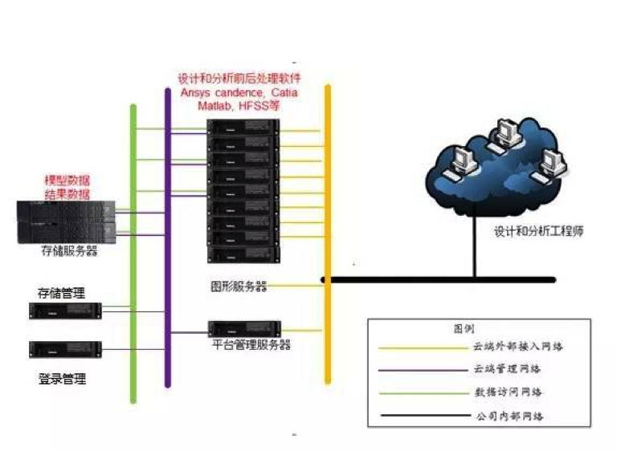
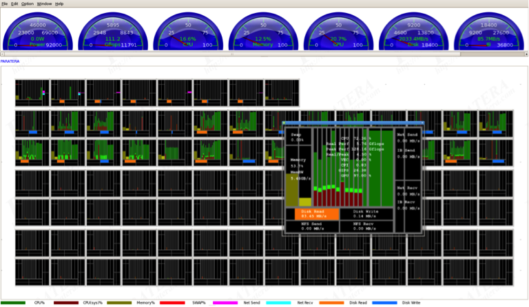

时空旅行实现了？
研究员小王是某重型机械公司的科研人员，和往常一样，小王将铸造凝固模拟、锻造成形模拟、材料热力、流体模拟等一大堆参数数据输入到计算机模拟软件中，等待着168小时非定常计算后的结果反馈......
然而，不到24个小时，
计算机就反馈了正确的计算结果！
发生了什么？
难道小王穿越到了7天后......
其实，并不是小王穿越了，而是联想高性能HPC集群的功劳。
决胜科研 计算性能和效率是关键小王所在的重型机械公司是中央管理的国有重要骨干企业，其新成立的研究所正在夜以继日的努力攻关材料工程技术上的各种难题。高性能计算是科学研究的基础，材料研发工作更是对计算机辅助设计技术提出了更高的要求。材料研发的高性能计算系统需要运行ProCAST、Ansys、Fluent、JMatPro等一系列软件。要求高性能计算系统拥有良好的兼容性并且能高效管理软件进行作业调度配合。要求高性能计算系统有很好的性能分析和远程管理功能，以适合不同用户及时调用高性能资源进行科学计算。 软硬结合 联想高性能计算激发“引力波”联想深腾7000高性能集群系统的上线，成功解决了该公司材料科学研究的难题，为其科研创新提供一大利器，同时，也为其科研人员激发了“穿越时空”的“引力波”：高性能集群系统由8台双路计算节点阶段组成，操作系统为主流的Linux平台，采用8核2.0以上主频CPU，计算能力充沛可满足大量计算需求，系统理论计算峰值高达2560GFlops。
运用40Gb/s Infiniband高速网络作为计算通讯平台，利用统一FC-SAN存储和满足吞吐量的IO带宽承担繁重的高性能计算数据存储、输出任务，使得节点间及节点与存储间的海量数据交互速度大幅提升。利用功能强大的集群作业调度和管理工具LCOMS-Paramon，极大方便用户对集群进行准确的运用与管理。  联想提供的集群分析系统，帮助用户进行系统瓶颈准确判断，在细微之处进行程序和系统的调优，提升高性能计算的效率。
虽然，时空穿越现在还没有实现。但是，联想优秀的高性能集群产品，正在帮助越来越多的科研人员加速前进。相信，在不远的将来，时空旅行一定会来到我们身边！